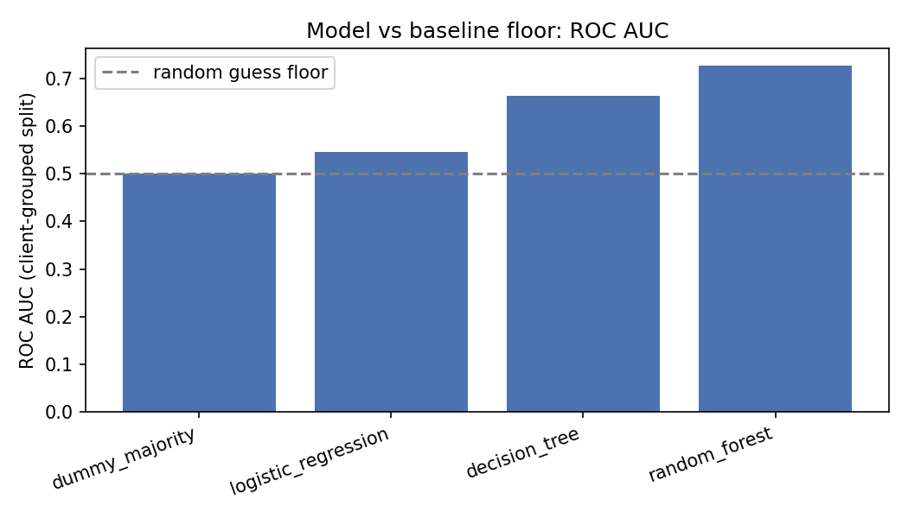
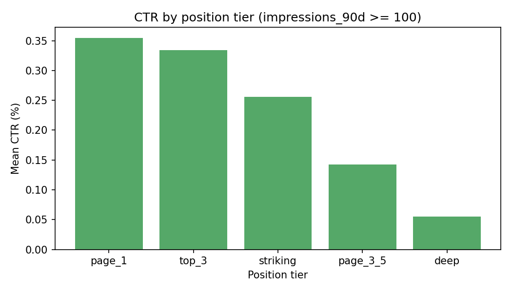
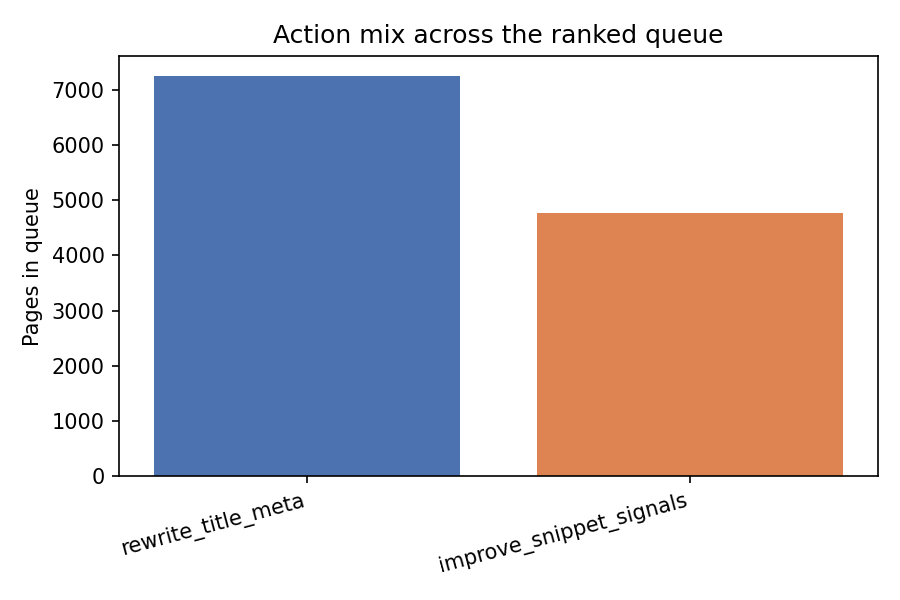

Which Pages Under-Capture Clicks? A Position-Adjusted CTR Opportunity Score for Search Content
A capstone study on FlyRank's ML Internship dataset, CTR / Engagement Opportunity Scoring lane.
Abstract
Question: among search pages that already rank well enough to earn clicks, which ones get meaningfully fewer clicks than other pages at the same position, and how should a content team prioritize reviewing them?
Method: a transparent baseline score ranks pages by how far their observed click-through rate (CTR) falls below the median CTR of peers in the same position tier, scaled by impression volume. A Random Forest classifier was then trained, deliberately excluding CTR itself from its features, to test whether content and engagement signals alone can anticipate CTR underperformance, validated with a client-grouped split to prevent memorizing any one client's style.
Result: the position-tier pattern behind the baseline is strong and well-supported (CTR falls from 0.35% at the top of page one to 0.055% for deep results, across thousands of pages per tier). The honest model, without access to CTR, reaches a ROC AUC of 0.727 against a 0.500 random floor, a real but modest signal, dominated by on-page engagement rate rather than any single obvious feature.
Limitations: this is an observational, decision-support tool, not a causal one; it ranks review priority, it does not predict how much a rewrite would help, and one signal explored (content staleness) returned an inconclusive result that was deliberately left out of the model rather than forced in.
1. Introduction
Search content teams routinely have more pages than review time. A page can rank well and still fail to earn the clicks its position should produce, a solvable problem, if it can be found. This project asks a narrow, answerable version of that question: among visible, well-ranked pages, which ones under-capture clicks relative to comparable pages, and can that be turned into an honest, ranked review queue?
The decision this work supports is simple: an SEO content editor, working down a limited list each week, needs to know which page to open first. The cost of getting it wrong is real but bounded, time spent reviewing a page whose low CTR turns out to be sampling noise rather than a genuine title or snippet problem. That cost shaped the whole design: every score here comes with a volume floor, and every claim below is stated as an association, not a guarantee.
2. Data
The primary dataset is FlyRank's anonymized ML Internship starter release (30,000 content rows), covering a rolling 90-day performance window per page: impressions, clicks, CTR, average search position, content metadata, and engagement signals. All identifiers are pre-scrambled; no client names, domains, or raw queries appear anywhere in this dataset or in this analysis.
Every column used is an observed signal, none of FlyRank's internal product decisions (composite health scores, priority flags, workflow labels) are shipped in this release, which is a deliberate design choice on FlyRank's part: it keeps any resulting model honest, since there's no existing decision to accidentally copy.
A second, larger release, FlyRank's full search warehouse (hosted on Hugging Face, gated access, roughly 79 million rows in the daily performance table), was also explored to build and verify a formal monthly data contract on real, larger-scale data. That exploration used one representative month and is documented in the project repository; the starter dataset remains the primary basis for the model and results reported here, since it's the release the validation design below was built and tested against end to end.
Deliberately excluded: a 90-day query-mix table from the warehouse release, its fixed trailing window overlaps multiple calendar months and doesn't align with the single-month grain used elsewhere; and, within the starter dataset, two 30-day trend columns, reserved strictly as potential future label material and never used as model inputs.
3. Methodology
Label
A page is flagged is_underperforming if its observed CTR falls below the median CTR of other pages in the same position tier, computed from the same 90-day window as every feature. This is a current-window descriptive label, not a forecast: it says a page sits below its peers today, it does not claim that changing the page would improve anything, that would require a controlled before/after test this dataset cannot provide.
Baseline
A transparent, hand-written rule ranks candidate pages by:
score = (ctr_gap < 0) × max(0, −ctr_gap) × log(1 + impressions_90d)
restricted to visible pages (impressions_90d ≥ 500) ranking well enough to matter (0 < avg_position ≤ 20). Every flagged page carries the reason code low_ctr_visible_page.
Features
The model uses only signals knowable at the review moment and never derived from the label itself: impression volume, average position, word count, content age, days since last update, engagement rate, scroll rate, AI-referral traffic share, search volume, competition level, cost-per-click, content type, search intent, and position tier. CTR, the CTR gap, and raw click counts are deliberately excluded from the model, since the label is a direct threshold on the CTR gap, including it would let the model read the answer off the input rather than predict anything.
Validation design
Pages were split by client (75/25), not at random, since pages from the same client share a publishing template and strategy. A plain random split was tested for comparison and leaked 27 of 28 clients across train and test, inflating apparent precision to a suspicious 1.000; the client-grouped split (zero client overlap) is the number reported throughout this paper.
Leakage checks
A confession test confirms the exclusion above was necessary: adding the CTR gap back into the feature set collapses the model's honest ROC AUC of 0.727 up to a trivial 1.000. That collapse is the signature of label leakage, not model skill, and it's why CTR-derived columns stay out of every reported result.
4. Results
The baseline is not a fair benchmark for the model to beat, it's built directly from the same quantity the label thresholds on, so it reaches near-perfect precision by construction. The meaningful comparison is the model against a naive majority-class floor, on the same client-grouped split.
| Model | ROC AUC | Precision@20 | Precision@50 |
|---|---|---|---|
| Dummy (majority class floor) | 0.500 | 0.650 | 0.420 |
| Logistic Regression | 0.545 | 0.750 | 0.640 |
| Decision Tree | 0.664 | 0.850 | 0.780 |
| Random Forest | 0.727 | 0.700 | 0.680 |

Random Forest wins on ROC AUC; the Decision Tree wins on precision@50. Both are reported rather than picking whichever flatters one model, "best" depends on which metric matches how the queue will actually be used. Permutation importance shows on-page engagement rate dominating every other feature by roughly five times, a plausible signal (pages that don't hold visitor attention plausibly also under-earn clicks from the results page) rather than a suspiciously perfect one.

5. Limitations & Honest Framing
- Observational, not causal. Every finding here is directional and decision-support: it tells a reviewer where to look first. It does not prove that a specific edit will change a specific page's performance, and no claim in this project should be read as evidence about how a search engine's ranking algorithm works.
- The label is a proxy, not a forecast. A page below its tier's median CTR today may or may not improve if reviewed, that causal question needs a controlled experiment this dataset can't run.
- One signal returned an inconclusive result, and was left out rather than forced in. MIXED Content staleness was checked as a candidate signal: the unfiltered data showed a direction opposite to the hypothesis, driven by a thin, high-variance sample (n=174); once volume-floored to the same standard as the rest of this study, the direction matched expectation but the sample shrank to n=17, too small to trust either way. It was excluded from the final model on that basis.
- A supporting exploration used a single month of a larger dataset. That snapshot can't separate a genuine pattern from month-specific seasonality or a mid-month onboarding wave, which is part of why the year-round starter dataset carries the headline results in this paper.
6. Ranked Recommendations
The baseline produces a full ranked review queue across the candidate pool of 12,023 visible, well-positioned pages spanning 28 clients. Every entry carries the same reason code, with the suggested action split by search intent:
- Reason code: low_ctr_visible_page — a visible, well-ranked page earning meaningfully fewer clicks than its position-tier peers.
- Informational / navigational pages → rewrite_title_meta (7,252 pages): the title and snippet are usually the whole pitch, there's no purchase signal to add.
- Transactional / commercial pages → improve_snippet_signals (4,771 pages): price, availability, or rating signals in the snippet plausibly move clicks more than title wording alone for these intents.

Monitoring triggers: a rebuild (not just a rerun) is warranted if the candidate pool size or base rate drift sharply from today's 12,023 pages / 0.490, if the honest model's ROC AUC falls toward the 0.500 dummy floor on a fresh client-grouped split, or once the staleness signal accumulates enough volume (n ≥ 50) to move off its current MIXED verdict.
7. Reproducibility
Every number and figure in this paper is generated directly by code in the linked repository, nothing here is manually transcribed or estimated.
- Repository: github.com/jasleen13/ML-Internship
- Capstone notebook:
work/notebooks/capstone.ipynb - Weekly notebooks behind this work: research framing (
w01), task framing (w02), data contract (w03), baseline (w04), model (w05), validation & leakage audit (w06), action playbook (w07)